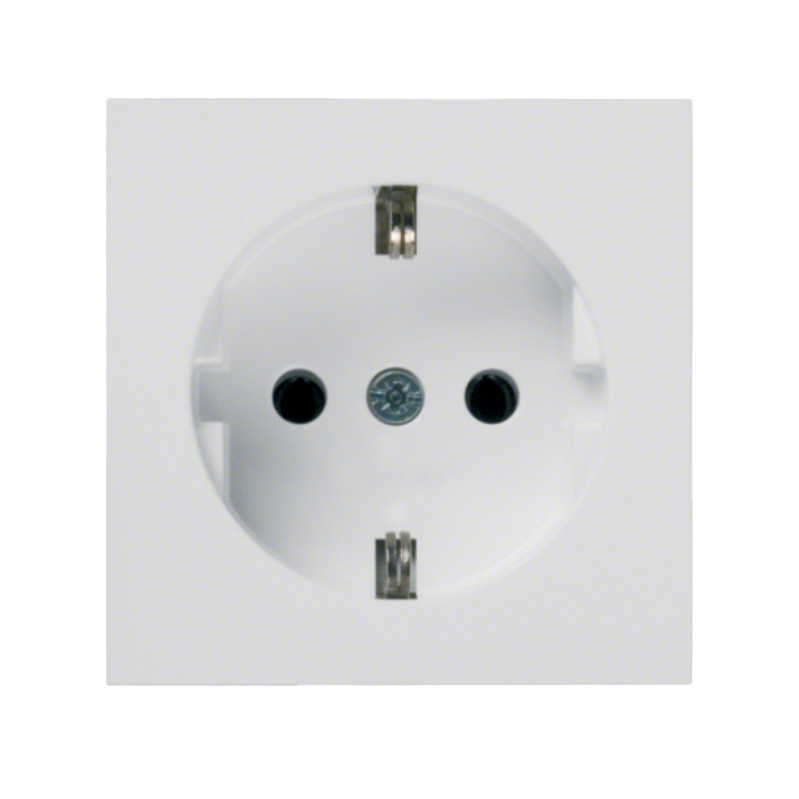
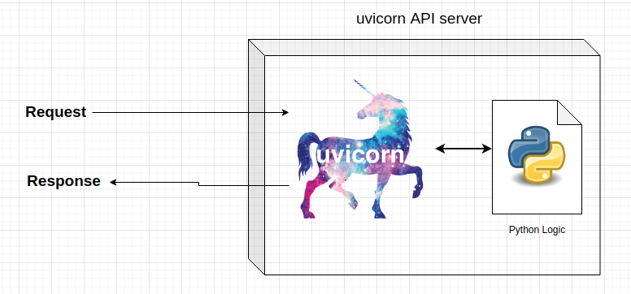

API server¶
In the past chapter, we have created a simple API that can be called from a browser with one endpoint. That one endpoint returned the root of a number.
When we call that endpoint (http://127.0.0.1:8000/root_of_number?number=2), all the transfering of data, waiting for Python calculations, and returning the result, is done by a program called uvicorn.
As the writers of uvicorn say:
“Uvicorn is a lightning-fast ASGI server implementation, using uvloop and httptools”.
To read the official documentation of the framework visit: https://www.uvicorn.org/
Programs like uvicorn, gunicorn and gevent are populary termed as API servers (they serve the API requests and response). When initiated, the program uvicorn creates an application in runtime (losely speaking, this program is called a server) and it is ready to accept connections.
Reading the definitions and the documentations for the first time, it may not be easy to understand what is an API or what is an ASGI. Before diving deeper and writing more complex programs, it is important to understand the basics of the API server side.
Terminologies of API serving¶
In this section, I provide a brief explanation of the terms used in the API serving.
API server¶
The term server is used to describe the server side of an API. The server is the program that is running on the computer that is serving the API requests. Uvicorn is an API server that is in runtime on the machine it is started in, receives requests, runs the data from the requests through the user written code and returns the response. Every API server has its own PID on the system.
SYNC vs ASYNC¶
Synchronous (sync) API server is a type of server that sends out a request, waits for all the internal calculations to be completed, and returns the response. The underlying enpoint cannot be accessed while the initial calculations are being made.
Asynchronous (async) API server is a type of server that sends out a request, and returns a response immediately. The underlying endpoint can be accessed while the initial calculations are being made. All the calls get queued and the server will process them in the order they were received.
Socket¶
A socket is an electrical device that is used to connect a device to the source of electricity.

There are two main subjects in a socket system: the socket itself and the device which is connecting to it. Keep this in mind when you are reading this section, it will make the grasping of linux sockets easier.
A socket in Linux is a program (which has as PID) that enables the connection of two applications via a netork. In an API world, a socket on the server receives data and sends out a response, and a socket on the client receives the response and sends out a request.
A diagram on sockets [of Computer Science, 2021]:

TCP stands for Transmission Control Protocol. It is a protocol that is used to send data over a network. As we can see from the graph, a socket is created on the server side which has different functionalities than the user side. We can view a socket as an actively running object in computer memory with standart methods:
connect()
send()
recv()
close()
bind()
listen()
…
Lets assume we are running the API server via the link http://127.0.0.1:8000. The uvicorn application automaticaly creates a socket between the IP address of 127.0.0.1 (which is the local machine), port 8000 with any calls to the link. The uvicorn framework automatically creates a socket for every request that is received.
ASGI¶
ASGI stands for Asynchronous Server Gateway Interface. It is a specification for the API server side, containing a set of rules that defines how the API server should behave. In this case, the API server is asynchronously accepting requests, running them through the user written code and returning the response.

API server example¶
Lets create an async API endpoint which returns the n-th order root of a number. The full Python code for creating the API in memory:
!cat api-n-root/get_n_root.py
# Importing the fastAPI library
from fastapi import FastAPI
# Creating an instance of the FastAPI class
app = FastAPI()
# Creating an endpoint with the GET method
@app.get("/root")
def root_of_number(number: float, n: float):
"""
The function returns the n-th root of the number.
Parameters
----------
number : float
The number to find the n-th root of.
n : float
The n-th root to find.
Returns
-------
float
The n-th root of the number.
"""
return {"root": number ** n}
This Python code will be used by uvicorn not only to create an enpoint (/root) but also to tell the computer what to do when a request access it. To launch the uvicorn API server, use the command:
uvicorn api-n-root.get_n_root:app
The uvicorn application will search for the script get_n_root.py in the directory api-n-root and will use the object app to handle the requests. All of the socketing and other runtime stuff is handled by the uvicorn framework.
After the command is initialized, the output should be similar to the following:
INFO: Started server process [78406]
INFO: Waiting for application startup.
INFO: Application startup complete.
INFO: Uvicorn running on http://127.0.0.1:8000 (Press CTRL+C to quit)
The API server has a PID of 78406 and is listening on the port 8000 on the localhost machine. When a client sends data to the address http://127.0.0.1:8000, the request is “hijacked” by uvicorn and all the logic starts. The first thing that uvicorn does is it checks whether an API endpoint exists which matches the request. If it does, it will run the code in the file get_n_root.py and return the response. If it does not, a response with status code 404 (resource not found) is returned.
For example, if the client sends a request to http://127.0.0.1:8000/root?number=1879&root=0.75, a dictionary with the following content is returned:
{"root": 285.39416206496446}
That is the answer to the problem of what is \(1879^{0.75}\). The uvicorn server tracks all the traffic going into it and the above request creates a log entry of:
INFO: 127.0.0.1:57894 - "GET /root?number=1879&n=0.75 HTTP/1.1" 200 OK
By default, the HTTP method of the request when we enter a link to a browser is GET. The server responded with the status code 200 which means OK.
If we try another link like http://127.0.0.1:8000/groot?number=1879&root=0.75, we would get the following response:
{"detail":"Not Found"}
With the info entry:
"GET /groot?number=1879&root=0.75 HTTP/1.1" 404 Not Found
In the next chapter, we will connect to a database and create a bit more complext API.